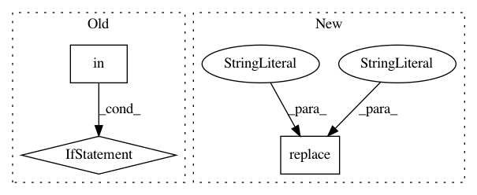

<html><h3>69d2f03db6b1e3fec37a711a912df4c2181ffd13,allennlp/common/tqdm.py,,replace_cr_with_newline,#Any#,33
</h3><link rel="stylesheet" href="../../../../default.css">
<script src="../../../../highlight.pack.js"></script> 
<script>hljs.initHighlightingOnLoad();</script>
<html><h3></h3><h3>Before Change</h3><pre><code class='java'>
    without adding more lines to the terminal output. Displaying those in a file won&quott work
    correctly, so we&quotll just make sure that each batch shows up on its one line.
    
    <a id="change">if "\r" in message:
        message = message.replace("\r", "")
        if not message or message[-1] != "\n":
            message += "\n"
   </a> return message


class TqdmToLogsWriter(object):</code></pre><h3>After Change</h3><pre><code class='java'>
    &#47&#47 In addition to carriage returns, nested progress-bars will contain extra new-line
    &#47&#47 characters and this special control sequence which tells the terminal to move the
    &#47&#47 cursor one line up.
    message = <a id="change">message</a>.replace("\r", "").replace(<a id="change">"\n"</a>, <a id="change">""</a>).replace("", "")
    if message and message[-1] != "\n":
        message += "\n"
    return message</code></pre><div id='inPattern'>In pattern: SUPERPATTERN</div><BR><div id='frequency'>Frequency: 3</div><BR><div id='size'>Non-data size: 3</div><BR><h3>Instances</h3><BR><div id='link'><a href='https://github.com/allenai/allennlp/commit/69d2f03db6b1e3fec37a711a912df4c2181ffd13#diff-567916d37ccfaa399c21fc09f9e9dc868be58e1a2a20ac34fc6f5babf1bc367fL39' target='_blank'>Link</a></div><div id='project'> Project Name: allenai/allennlp</div><div id='commit'> Commit Name: 69d2f03db6b1e3fec37a711a912df4c2181ffd13</div><div id='time'> Time: 2020-07-14</div><div id='author'> Author: epwalsh10@gmail.com</div><div id='file'> File Name: allennlp/common/tqdm.py</div><div id='class'> Class Name: </div><div id='method'> Method Name: replace_cr_with_newline</div><BR><BR><div id='link'><a href='https://github.com/evilsocket/pwnagotchi/commit/90b0e10e81a5a0e03753715ec1034278bdd5f600#diff-c1ae85f41d50579e2706dc894a12c55b9cee966595bef1788c23809558f721d3L86' target='_blank'>Link</a></div><div id='project'> Project Name: evilsocket/pwnagotchi</div><div id='commit'> Commit Name: 90b0e10e81a5a0e03753715ec1034278bdd5f600</div><div id='time'> Time: 2019-10-07</div><div id='author'> Author: evilsocket@gmail.com</div><div id='file'> File Name: pwnagotchi/plugins/default/api.py</div><div id='class'> Class Name: </div><div id='method'> Method Name: parse_pcap</div><BR><BR><div id='link'><a href='https://github.com/evilsocket/pwnagotchi/commit/2f948306ebeabf10050bb0c07a3254b420c30751#diff-dae9d117856d8e536a3628dcc73160641339a7962458302c0b20f060d426f000L51' target='_blank'>Link</a></div><div id='project'> Project Name: evilsocket/pwnagotchi</div><div id='commit'> Commit Name: 2f948306ebeabf10050bb0c07a3254b420c30751</div><div id='time'> Time: 2019-11-01</div><div id='author'> Author: evilsocket@gmail.com</div><div id='file'> File Name: pwnagotchi/plugins/__init__.py</div><div id='class'> Class Name: </div><div id='method'> Method Name: load_from_path</div><BR>